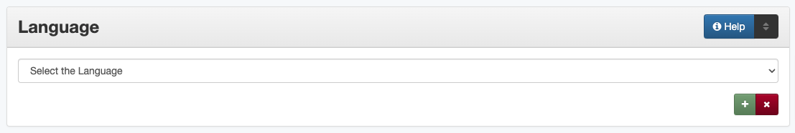

Language
Definition
The language(s) of the intellectual content of the resource.
Where Can the Language Information be Found?
Language is determined by reading/examining the item:
Item Types |
Information Sources |
|---|---|
For text |
|
For images |
|
For maps |
|
For music scores |
|
For videos |
|
For sound files |
|
For computer files |
|
How Language Works in the Metadata Form
- Parts:
Language – drop-down menu
- Repeatable?
Yes - to include multiple language, click ‘Add’ to repeat the field
- Required?
Yes - also see (more information) about required fields
How Should the Language be Filled in?
Guideline |
Examples |
|---|---|
|
eng - English |
|
spa - Spanish
ger - German
|
|
nol - No Language |
|
eng - English
spa - Spanish
Note: Book is printed in two
sections, the first is Spanish and
the second is the English
translation
|
|
nol - No Language
Note: The name “Bartimaeus” is
carved into the top of the box.
|
|
oth - Other
Note: Language is unknown.
Note: Text is in the Kutenai
Indian language.
|
Other Examples:
- French map
Language: fre - French
- Laws of the Republic of Texas
Language: eng - English
- Photograph of Berlin showing marquees and shop windows
Language: ger - German
- Adding machine with a label saying, “Made in America”
Language: eng - English
- Landscape photograph
Language: nol - No Language
- Audio recording of testimony in Czech and German
Language: cze - Czech Language: ger - German
- Video in Hebrew with English subtitles
Language: heb - Hebrew
Language: eng - English
Note: Performed in Hebrew with English subtitles.
- Article in Amharic with English translations
Language: oth - Other
Language: eng - English
Note: In Amharic with English translations in parallel columns.
- Proceedings and abstracts in English and Spanish
Language: eng - English
Language: spa - Spanish
Note: Papers presented in Spanish or English with abstracts in English.
- Recording of a music recital sung in Italian and French
Language: fre - French
Language: ita - Italian
Resources
UNT Language Controlled Vocabulary
More Guidelines:
Comments
Preferred usage is to utilize a standard schema for language names as defined by ISO639-2:
Three letter language codes, followed optionally by a two-letter country code (taken from the ISO 3166 standard).
To simplify data entry, the system does not currently support the addition of a country code to the language code.
For less common languages that are not documented in the ISO standard, codes will come from Glottolog
Undocumented languages may be added to Glottolog according to their requirements.